大多数已有的参数化查询优化（PQO）技术都依赖传统的查询优化器代价模型，而这些模型往往不准确，导致次优的查询性能。我们提出 Kepler，一种端到端的、基于学习的 PQO 方法，相比传统查询优化器在查询延迟上取得了显著的加速。我们方法的核心是行数演化（Row Count Evolution, RCE）——一种基于子计划基数空间扰动的新型计划生成算法。此前的方法需要准确的代价模型，而我们绕过了这一要求：通过实际执行数据来评估候选计划，并训练一个机器学习模型，在给定参数绑定值的情况下预测最快的计划。我们的模型利用神经网络不确定性方面的最新进展，从而鲁棒地预测更快的计划，同时避免查询性能退化。在实验上，我们展示了 Kepler 在 PostgreSQL 的多个数据集上都取得了查询运行时间的显著改进。
CCS 概念：·信息系统 → 查询优化。
关键词：数据库、查询优化、机器学习。
ACM 参考文献格式：Lyric Doshi, Vincent Zhuang, Gaurav Jain, Ryan Marcus, Haoyu Huang, Deniz Altınbüken, Eugene Brevdo, and Campbell Fraser. 2023. Kepler: Robust Learning for Faster Parametric Query Optimization. Proc. ACM Manag. Data 1, 1, Article 109 (May 2023), 25 pages. https://doi.org/10.1145/3588963
参数化查询优化（PQO）旨在优化参数化查询，即那些 SQL 结构相同、只在绑定的参数取值上不同的查询。这类参数化查询在现代数据库应用中无处不在，并且由于它们会被重复执行，因此存在巨大的优化机会。
然而，PQO 主要从减少查询规划时间的角度被研究，即尽量避免在可能的情况下重新优化 [7, 9, 13, 17, 18, 34]。这类方法隐式地受到系统查询优化器性能的限制，因此继承了传统查询优化器所有已被充分研究的次优性 [22]。因此，一个面向参数化查询的理想系统，不仅应该通过 PQO 最小化规划时间，还应该通过查询优化（QO）来优化查询执行性能。
已有多种方法尝试用机器学习来改进查询优化 [20, 25, 29, 38, 39]。遗憾的是，大多数学习型查询优化技术至少存在四个缺陷：(1) 它们需要的推理时间高于传统方法 [19, 24]；(2) 它们在不同的数据集规模和分布上表现不一致 [19, 26, 31]；(3) 它们对查询性能的改进往往不清晰 [19]；更糟糕的是，许多这类系统缺乏 (4) 鲁棒性：查询性能的退化（regression）在大多数生产场景中都不可接受 [12]。这对基于学习的方法尤其构成挑战，因为它们通常无法保证其所有预测都能带来执行时间的改善 [35]。
我们认为，将查询优化问题限定在参数化查询这一设定下，会形成一个更易于学习的、因而可以被更鲁棒地解决的问题。为此，我们提出 Kepler（K-plan Evolution for Parametric Query Optimization: Learned, Empirical, Robust），一种面向参数化查询的端到端学习方法。建立在 PQO 先前工作 [34] 的基础之上，Kepler 借助一种新颖的计划生成策略、一个训练查询执行阶段，以及一种鲁棒的神经网络模型设计。综合起来，我们展示了这些技术同时在规划时间和查询执行性能上带来显著改进，同时满足 PQO 和 QO 两个目标。最重要的是，Kepler 对鲁棒神经网络技术的使用，极大地降低了性能退化的频率和幅度。图 1 展示了 Kepler 的各个组成部分如何共同促成在 Stack 基准 [25] 上整体 2.41× 的几何平均加速。
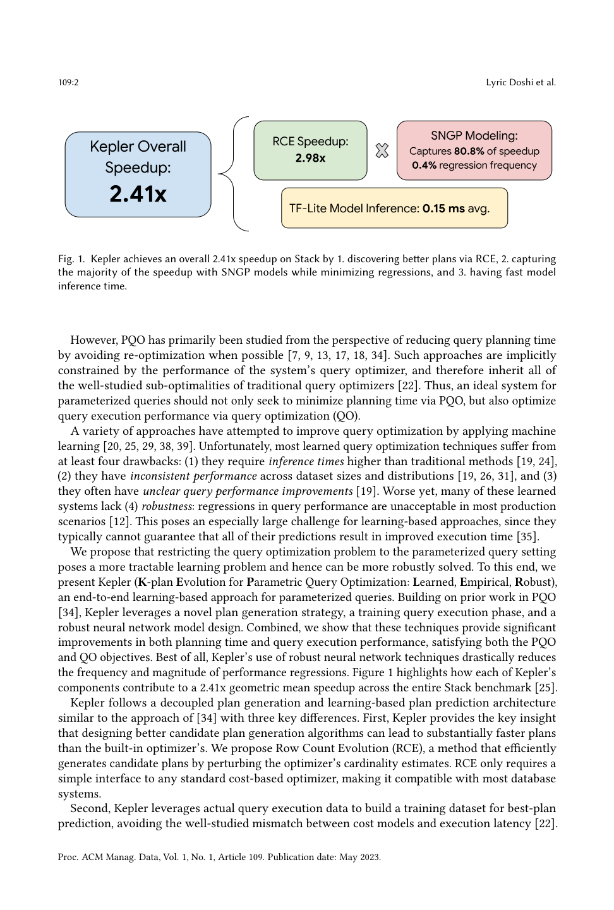
Kepler 遵循一种与 [34] 相似的"计划生成与学习式计划预测"解耦架构，但有三个关键区别。首先，Kepler 提供了一个关键洞见：设计更好的候选计划生成算法，可以比内置优化器生成明显更快的计划。我们提出行数演化（RCE），一种通过对优化器的基数估计进行扰动来高效生成候选计划的方法。RCE 只需要对任意标准基于代价的优化器提供一个简单接口，因此兼容大多数数据库系统。
其次，Kepler 利用实际的查询执行数据来构建用于最优计划预测的训练数据集，从而避免了代价模型与执行延迟之间众所周知的失配 [22]。
第三，Kepler 使用鲁棒的神经网络预测技术来降低尾延迟并减少查询退化（即比现有查询优化器更差的性能）。具体而言，Kepler 使用谱归一化神经高斯过程（SNGPs） [23] 来精确量化它对某个预测的信心，并在不确定时回退到数据库自身的查询优化器。
我们的贡献：
参数化查询优化。 PQO 已在大量工作中被广泛研究 [7, 9, 13, 17, 18, 34]。标准 PQO 形式化的目标是：在最小化相应查询延迟退化的前提下，减少调用查询优化器的次数 [7, 13, 34]。尽管 Kepler 同样关注参数化查询，但其主要目标更接近于标准查询优化——后者旨在改善查询延迟。Kepler 同时还借助快速推理的 ML 模型，在 PQO 目标上同步取得改进。
此前的 PQO 方法通常做出简化假设，例如严重依赖优化器代价模型，或使用基础表的选择度作为输入特征 [13, 34]。这对某些高级商业系统或许可行；然而，鉴于 PostgreSQL 等优化器已被充分研究的缺陷 [22]，这种对现有优化器的过度依赖尤其危险。我们的方法与 [34] 结构相似，后者同样解耦了 populateCache（候选生成）和 getPlan 阶段（基于 ML 的预测）。但是，由于他们聚焦于"匹配现有优化器"这一标准 PQO 目标，他们需要使用 bandit 算法来降低训练数据成本。相比之下，Kepler 的主要目标是查询性能与鲁棒性，因此对训练查询效率的强调较低。
若干流行数据库系统已实现 PQO 特性，包括 Oracle Adaptive Cursor Sharing、Aurora Managed Plans 与 SQL Server Parameter Sensitivity Plan Optimization [1–3]。这些特性都严重依赖其代价模型（基于传统统计与启发式），并未使用机器学习模型。
查询计划生成。 若干先前工作提出了候选生成方法，我们将其分为四大类：
总之，这些方法都因各种原因不尽如人意：无法生成更快计划（1、2、4）、未能有效探索计划空间（3），或计算上不可行（4）。
面向查询优化的机器学习。 大量技术将 ML 应用于 QO，最显著的是预测基数估计（CE）[20, 38, 39]。近期工作表明基数估计在实践中可能很脆弱，即便很小的 Q-error 也会导致明显更差的计划 [22, 35]。总体上，这些工作在将模型集成进优化器后并未测量所选计划真实的端到端执行延迟 [24]。若干方法展示了改进的查询性能，但通常未考虑鲁棒性问题。Neo [26] 与 Bao [25] 分别利用树卷积神经网络、通过强化学习与情境 bandit 自适应优化计划。这些在线算法对稳定性或避免退化不提供任何保证，因而无法可靠地部署到生产中。类似地，将深度强化学习应用于 QO 的技术也未展示出一致的更好性能，并存在鲁棒性问题 [21, 28, 37]。
本节中，我们描述问题设定（3.1 节）、方法概述（3.2 节），并进一步讨论 Kepler 中的具体设计选择（3.3 节）。
与先前工作 [34] 相同，我们考虑被不同参数绑定反复调用的参数化查询。这类查询由模板 $Q$ 指定，$Q$ 带有 $m$ 个参数化谓词 $x_0,\dots,x_{m-1}$，数据类型各异。令 $q$ 表示一个具体查询实例，即 $Q$ 附带一组固定的参数绑定值。与模板 $Q$ 关联的计划 $p$ 规定了如何执行任意查询实例 $q\sim Q$。$Q$ 的子计划查询是 $Q$ 限制为只含其部分表的查询 [14]，其输出基数称为子计划基数。我们假设有一个固定的、带有内置查询优化器的数据库系统，并记默认计划 $p_{\text{default}}(q)$ 为优化器为 $q$ 选定的计划。最后，工作负载 $W\subset\mathcal{W}$ 由单一模板 $Q$ 的一组查询实例 $\{q_0,\dots,q_{n-1}\}$ 组成，其中 $\mathcal{W}$ 表示所有可能查询实例的空间。
我们的方法在高层上遵循 [34]：考虑单一、孤立的查询模板 $Q$，并将"生成一组可能计划"与"为每个查询实例决定使用哪个计划"这两个问题解耦。更形式化地，这两个问题可描述为：
与 [34] 试图匹配内置优化器性能不同，我们的目标是尽可能改进内置优化器。为此，Kepler 包含一种复杂的候选生成算法（第 4 节），它经验性地生成比内置优化器更好的计划。由此获得的加速让 Kepler 得以避免在训练数据收集阶段依赖可能脆弱的在线学习方法（如情境 bandit）。
目标。 我们先定义几个关键度量与术语。对给定查询实例，我们记某计划集 $P$ 上的最优计划为 $p^{\text{opt}}_P=\min_{p\in P}\text{ExecTime}(p,q)$，其中 $\text{ExecTime}$ 指实际执行时间。我们定义 $p^*_{\text{opt}}(q)$ 为所有可能计划上的最优计划，即 $P=\mathcal{P}$ 时。通常，"最优计划"对候选生成指 $p^*_{\text{opt}}$，对建模指 $p^{\text{opt}}_P$。我们也把与 $p^{\text{opt}}_P$ 或 $p^*_{\text{opt}}$ 执行时间相近的计划称为近最优计划。
对某固定候选集 $P$，我们定义相对默认计划的（预言）加速比为：
该量表示：若我们能预言式地访问 $P$ 中每个查询实例的最优计划，工作负载总执行时间可改进的倍数。我们指出该比率与 [34] 中执行代价次优性的定义完全一致；重命名为"加速比"是为了强调我们系统目标的差异。由于我们可以将 $P$ 与 $W$ 上所有默认计划的集合取并集，该加速比始终有下界 1。
类似地，对某个模型 $M:\mathcal{W}\to P$，我们定义其模型加速比为：
该量对应模型执行工作负载比默认优化器快多少。虽然按定义 $S_{\text{model}}$ 上界为 $S_{\text{opt}}$，但它并不一定下界为 1——即如果模型选择了比默认计划更差的计划。Kepler 的一个辅助目标是降低工作负载的尾延迟。若干工作已指出数据库优化器在查询延迟分布的尾部可能显著变差，这对需要更均匀运行时间的用例构成重大障碍 [25]。
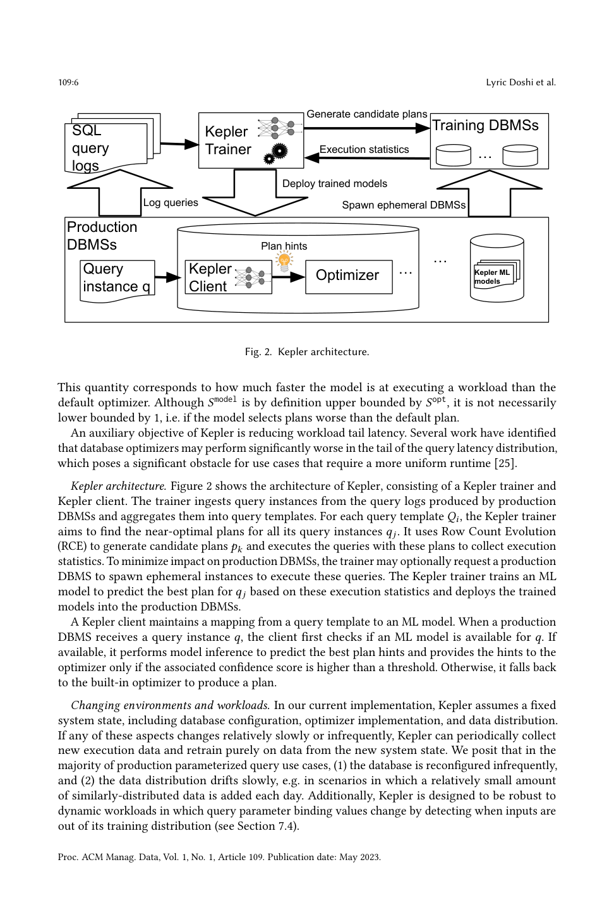
Kepler 架构。 图 2 展示了 Kepler 的架构，由 Kepler Trainer 与 Kepler Client 组成。Trainer 从生产 DBMS 产生的查询日志中摄取查询实例，并聚合为查询模板。对每个查询模板 $Q_i$，Kepler Trainer 旨在为其所有查询实例 $q_j$ 找到近最优计划。它使用行数演化（RCE）生成候选计划 $p_k$，并执行这些计划所附查询以收集执行统计。为最小化对生产 DBMS 的影响，Trainer 可选择性地请求生产 DBMS 派生临时实例来执行这些查询。Kepler Trainer 训练一个 ML 模型，基于这些执行统计预测 $q_j$ 的最优计划，并将训练好的模型部署到生产 DBMS 中。Kepler Client 维护从查询模板到 ML 模型的映射。当生产 DBMS 收到查询实例 $q$ 时，Client 先检查是否有可用模型；若可用，则进行模型推理以预测最优计划提示，并仅在关联置信度分数高于阈值时才把提示提供给优化器；否则回退到内置优化器生成计划。
变化的环境与工作负载。 在当前实现中，Kepler 假设固定的系统状态（包括数据库配置、优化器实现与数据分布）。如果这些方面变化相对缓慢或不频繁，Kepler 可周期性地收集新的执行数据，并仅在新系统状态的数据上重新训练。我们认为在大多数生产参数化查询用例中：(1) 数据库重新配置不频繁；(2) 数据分布缓慢漂移。此外，Kepler 被设计为对参数绑定值变化的动态工作负载具有鲁棒性——通过检测输入是否超出其训练分布（见 7.4 节）。
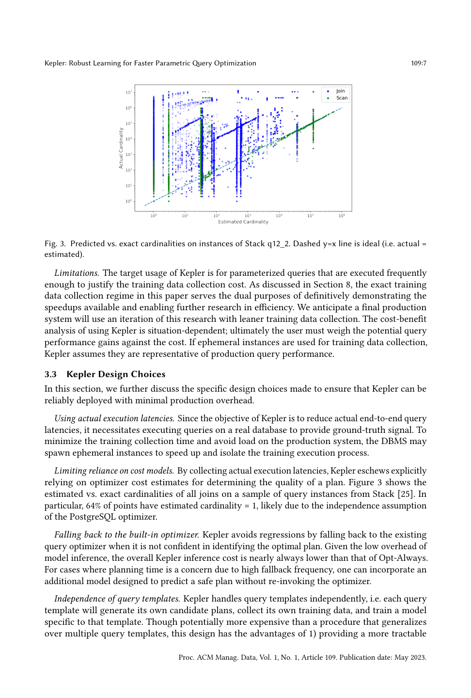
本节进一步讨论为确保 Kepler 能以最小生产开销可靠部署而做出的具体设计选择。
使用实际执行延迟。 由于 Kepler 的目标是降低真实端到端查询延迟，它需要在真实数据库上执行查询以提供必要的真值信号。为最小化训练收集时间并避免对生产系统的负载，DBMS 可派生临时实例来加速和隔离训练执行过程。
限制对代价模型的依赖。 通过收集实际执行延迟，Kepler 避免显式依赖优化器代价估计来判断计划质量。图 3 展示了 Stack [25] 中一组查询实例上所有连接的实际 vs. 估计基数；特别地，64% 的点估计基数为 1，这很可能是因为 PostgreSQL 优化器的独立性假设。
回退到内置优化器。 Kepler 通过在不确信能识别最优计划时回退到现有查询优化器来避免退化。鉴于模型推理开销很低，Kepler 的整体推理成本几乎总是低于"始终优化（Opt-Always）"。对因高回退频率而担忧规划时间的场景，可引入一个额外的、无需重新调用优化器即可预测安全计划的模型。
查询模板的独立性。 Kepler 独立处理各查询模板，即每个模板会生成自己的候选计划、收集自己的训练数据，并训练一个专属于该模板的模型。尽管这比跨多个模板泛化的过程可能更昂贵，但该设计有两方面优势：1) 提供更具可处理性的机器学习问题；2) 将每个查询与因其他查询变化（随模型迭代与新模板接入）引起的退化隔离开来。
候选生成阶段的目标是：构建一个计划集 $P$，使其包含工作负载分布 $\mathcal{W}$ 中每个查询实例 $q$ 的一个近最优计划；同时 $P$ 应足够小，从而对每个计划执行以收集训练数据集是可行的。平衡这两个相互竞争的目标是任何候选生成算法的主要挑战。
在本工作中，我们只考虑生成完全指定的计划，即连接顺序和每个连接/扫描方法都已确定。另一种可能是：候选生成算法只指定部分计划决策，而将剩余部分留给查询优化器确定。
表 1. RCE 超参数。
| 记号 | 含义 |
|---|---|
| $G$ | 演化代数（generations） |
| $b$ | 行数扰动的底数（exponent base） |
| $m$ | 行数扰动的指数范围（exponent range） |
| $S$ | 从上一代采样的计划数 |
| $N$ | 每个候选计划的扰动次数 |
工作负载候选生成。 给定对单一查询实例 $q$ 生成候选计划集的算法 $A$，我们定义其在工作负载 $W$ 上的对应计划集为各实例计划集的并集 $A(W):=\bigcup_{q\in W}A(q)$（见算法 1 第 1–5 行）。我们也用计划共享（plan sharing）描述 $p^{\text{opt}}_P(q)$ 由其他某个查询实例 $q'$ 生成的情形（即 $p^{\text{opt}}_P(q)\notin A(q)$，$p^{\text{opt}}_P(q)\in A(q')$）。
我们的方法。 我们提出行数演化（RCE），一种计算高效的算法，通过对优化器的基数估计进行随机扰动来生成新计划。RCE 基于如下理念：基数误估计是优化器次优的根本原因。RCE 利用这样一个事实——我们的候选生成阶段只需要生成一个包含（近）最优计划的计划集，而非直接识别单个高性能计划。与 Bao [25] 类似，RCE 利用内置查询优化器生成候选计划，但方式更细粒度、更高效。
我们将"应用随机扰动"这一思想实例化为一种演化式算法，如算法 1 所述。RCE 维护一个计划的代（generation）序列，初始代仅由查询优化器的计划构成。为构造后续代，RCE 先从先前代中均匀采样父计划；对每个父计划，RCE 只对该父计划中出现过的子计划的连接基数，按指数间隔范围（第 21–28 行）乘性采样因子进行扰动。重复此过程多次并将所得扰动输入查询优化器，RCE 生成一组子计划（第 14–18 行）。其中，只有此前任何代都未出现过的计划（unseen plans）才保留用于下一代（第 17–18 行）。
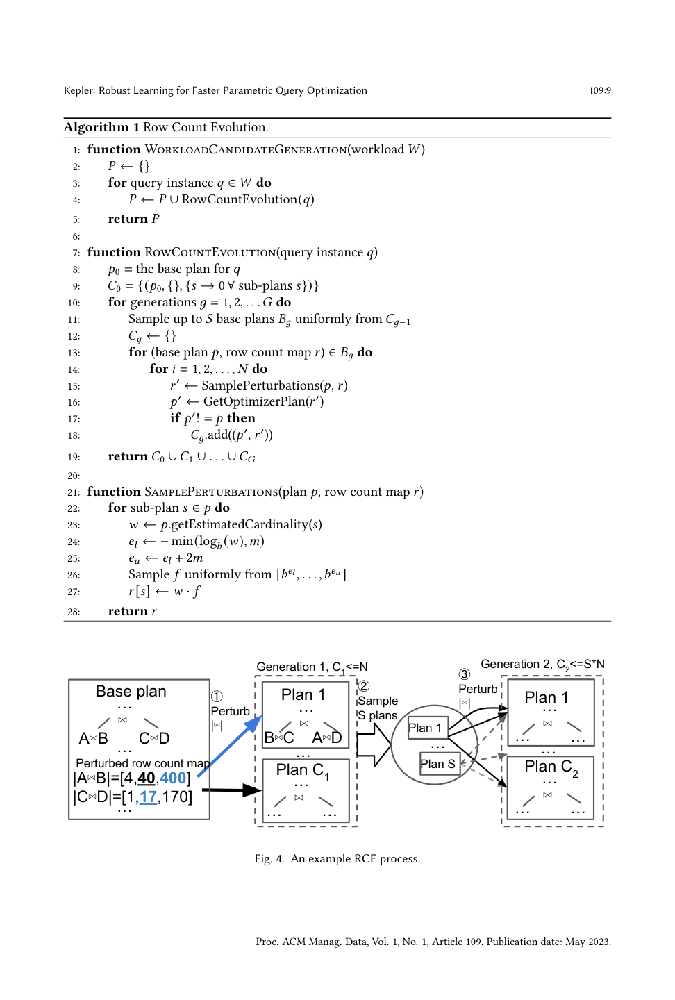
示例。 图 4 展示了 RCE 为一个具有两代演化的查询实例生成候选计划的过程。基础计划连接 $A\bowtie B$ 与 $C\bowtie D$ 的结果，估计 $|A\bowtie B|=40$、$|C\bowtie D|=17$。RCE 先用乘性因子扰动其基数，为每个子计划构造一组候选行数；使用底数 10、范围 1，$A\bowtie B$ 与 $C\bowtie D$ 的候选行数分别为 $[4,40,400]$ 与 $[1,17,170]$。RCE 然后从这些集合中均匀采样新的连接基数；一次采样值 400 与 17 促使优化器在第 1 代生成新计划 Plan-1。重复该过程 $N$ 次以生成第 1 代的 $C_1$ 个计划。接着，RCE 从第 1 代去重后的计划集中采样 $S$ 个，并对每个采样计划随机扰动其行数 $N$ 次，以生成第 2 代的 $C_2$ 个计划。
RCE 作为精确基数匹配。 对 RCE 的一种解读是：它高效地构建了一组精确基数计划的覆盖集。RCE 生成的候选集包含由多种扰动子计划基数诱导出的计划。若扰动足够多，很可能至少有一个会相当接近某个特定查询实例的精确基数，其诱导出的计划也可能相近。
乘性扰动。 应用乘性扰动可由基数估计中标准 Q-error 度量得到有力支持。RCE 进一步使用指数间隔的扰动集，以拥有与优化器 Q-error 分布相近的支撑。
只扰动相关子计划。 RCE 不扰动全部 $2^n-1$ 个子计划（对连接 $n$ 张表的查询），而只扰动那些实际出现在采样查询计划中的 $n-1$ 个子计划。这显著提高了 RCE 的效率，仅带来很小的通用性损失：由于扰动集在代间被继承，一个被误估计的子计划基数只有在被优化器严重高估时才永远不会被扰动；但由于独立性假设，优化器倾向于低估子计划基数，这种情形不太可能。
RCE 作为局部搜索。 RCE 通过在子计划基数的低维子空间中进行随机游走（从优化器基数估计处初始化）来有效探索计划空间。这种形式化隐式利用了：尽管这些初始估计通常不正确，但比随机估计更具信息量。
RCE 超参数。 我们的 RCE 实现包含多种超参数，允许灵活地在生成计划数量与潜在总加速之间进行权衡（表 1）。
生成候选计划集 $P$ 后，我们在训练工作负载上执行每个计划，以生成用于监督式最优计划预测的执行延迟数据集。训练工作负载可由用户提供，或从 DBMS 查询日志中捕获 [34]。我们并不对每个查询实例执行所有候选计划，而是使用自适应超时（adaptive timeouts）并构造近最优计划覆盖（plan covers）来剪枝次优计划。
执行机制。 我们通过提示（hints）提供所有连接/扫描方法与连接顺序，强制优化器产生候选计划。我们在多个数据库中并行执行查询实例及其候选计划。我们通过多次执行每个计划并取最小值作为估计延迟，来模拟热缓冲缓存（warm buffer cache）场景 [22]。这种重复执行策略也减少了执行时间测量中的潜在噪声。
自适应超时与计划执行重排序。 我们使用超时策略，以最小化在执行次优候选计划上的资源浪费。该超时策略改编自 [37]，有两个主要修改：第一，我们总是先执行默认计划，并自适应地对剩余计划重排序，以在逐查询实例基础上最大化超时逐步收紧的影响；我们按各查询实例上的历史执行延迟升序执行计划，作为一种尽快收紧超时的简单启发式。第二，对每个计划的第一轮迭代不应用收紧后的超时，以确保每个计划都模拟了热缓存场景。
在线计划覆盖剪枝。 我们还使用一种在线计划剪枝技术，基于实际执行时间来消除计划。具体而言，我们先为一个查询模板的前 $N$ 个查询实例执行所有计划，然后用一个集合覆盖（Set Cover）形式化来将计划剪枝到剩余查询实例的最小计划覆盖集。被剪枝后的集合成为该查询模板的 $k$ 个候选计划，即我们的模型只尝试从这些计划中做预测。若一个计划对某查询实例的执行时间在我们迄今所见最快时间的 $1+\epsilon$ 因子内，我们就认为它对 $q$ 是近最优的。计划覆盖是这样一个最小计划集：每个查询实例在该集中都有一个近最优计划。我们用集合覆盖的标准贪心近似来构造计划覆盖，迭代地挑选对最多剩余查询实例近最优的计划。我们还松弛该问题，只要求覆盖 $1-\delta$ 比例的查询实例，从而在计划覆盖大小与可达成加速之间进行权衡。
尾延迟重排序。 对许多查询模板，默认执行延迟的分布是重尾的。处于尾部的参数往往更次优，因而对总加速有超大影响。为确保计划覆盖计算包含这些参数，我们先评估这些查询实例。这种重排序在整个 Stack 数据集上带来了 7–8× 的执行时间与计划数减少。
在收集了基于我们候选计划集的完整实际执行延迟训练数据后，我们用监督式 ML 来预测任意查询实例的最优计划。Kepler 为每个查询模板训练一个模型，目标是最大化工作负载加速，同时最小化退化。当预测置信度低时，Kepler 也会回退到优化器的计划。第 7 节将展示：相比经典优化器典型的查询规划时间，我们模型的推理时间可忽略不计。
给定带 $m$ 个参数的模板 $Q$，Kepler 仅使用这 $m$ 个参数值作为输入特征。支持的类型包括数值（float/int）、字符串与日期/时间戳。我们对每种类型应用标准预处理：对字符串/低维整数特征用嵌入，对数值归一化到 $\mathcal{N}(0,1)$，对日期/时间特征做数值转换。我们不像 [34] 那样将参数值转换为相应的基础表选择度，原因如下：第一，选择度本质上是有损表示，当两个不同的取值具有相同选择度时会丢失信息；第二，当优化器基数估计次优时（见图 3），选择度更差。
字符串列与词表选择。 对每个字符串值列，我们构造固定大小的词表以限制模型规模。字符串特征通过查找表进行 one-hot 编码，并为词表外（OOV）值设置桶。然后在该 one-hot 编码上应用嵌入层，为词表中每个值创建可学习的嵌入。我们选择词表为：按该值对应的所有可能查询实例的总改进量排序的 top-$k$ 值。我们将最大边际改进（max marginal improvement）策略定义为：在列 $i$ 下选择满足如下目标的 top-$k$ 列值 $v$：
Kepler 模型最大化公式 (2) 定义的模型加速，同时最小化退化次数。该目标不可直接微分，因此我们讨论各种替代学习目标。
多标签分类。 我们将最优计划预测建模为一个多标签分类问题，其中每个近最优计划都有一个正标签（而非仅最优计划）[33]。多标签目标还提供了更丰富的监督信号，改进了所学中间表示的质量。我们用多标签分类损失的单标签转换来训练：以二元交叉熵损失训练每个候选计划的近最优概率。虽然我们的模型只预测计划覆盖中的计划（可能并不包含每个查询实例的默认计划），但我们对近最优性的定义确实在训练时利用了默认计划执行数据的可用性。
示例相关损失。 不同查询实例对整体目标公式 (2) 可能有不成比例的影响。我们利用标准的样本加权方法——示例相关交叉熵 [8, 16]，来优先处理那些改进增量最大的实例。对劣于默认计划的计划，我们用因子 $C$ 加权；对所有近最优计划，我们基于其经验执行改进应用软加权，即 $1+D\log(\ell_d-\ell_p)$，其中 $C$ 与 $D$ 都是可调超参数。
我们使用简单的前馈神经网络作为基础模型。为推理效率，我们考虑一个在共享表示之上、每个计划一个输出头的神经网络，相比为每个计划单独建模型 [34] 的方式，它提升了推理速度与模型规模。我们用标准小批量 SGD 训练神经网络。在真实场景中，模型的超参数可通过简单搜索或更精细的算法，将训练数据划分为训练集与验证集来调整。
不确定性。 Kepler 模型纳入了校准预测与不确定性估计，以避免预测显著次优的计划。将不确定性引入神经网络的两种前沿方法是集成（ensembling）与谱归一化神经高斯过程（SNGPs） [23]。前者同时训练 $M$ 个不同模型，并从其联合输出估计不确定性；后者对所有层应用谱归一化（提供对所有中间表示的双 Lipschitz 保证），并使用高斯过程输出层来高效估计不确定性。由于集成将训练与推理成本线性放大 $M$ 倍，Kepler 因其更低的开销而采用 SNGP 方法。
我们对 Kepler 的评估旨在证明：它在参数化查询工作负载上鲁棒地取得了最先进的执行延迟加速。主要结果总结如下：
目标度量。 为评估方法，我们同时使用 RCE 加速 $S_{\text{opt}}(RCE)$（简记 $S_{RCE}$）与模型加速 $S_{\text{model}}$，分别由公式 (1)、(2) 定义。我们指出 $S_{\text{model}}=p\cdot S_{RCE}$，其中 $0\le p\le 1$ 对应模型捕获的加速比例。由于模型可能预测出比内置优化器更差的计划，我们还测量查询退化频率 $P_{\text{reg}}$，定义为模型比默认优化器差至少 10% 的测试查询实例比例。各组件的主要度量：(1) 端到端性能 $S_{\text{model}}$；(2) 候选生成性能 $S_{RCE}$；(3) 模型性能 $p$、$P_{\text{reg}}$。Kepler 致力于在最大化 $p$ 与 $S_{RCE}$ 的同时最小化 $P_{\text{reg}}$。我们还报告第 99 百分位尾延迟加速。
数据集与查询抽取。 我们使用两个合成基准：TPC-H（均匀与偏斜，Zipf 因子=1，10GB [4]），以及 Stack——由真实 StackExchange 数据构成的数据库 [25]。TPC-H 含 22 个参数化查询。我们使用增强版 Stack，含 87 个参数化查询：42 个来自原始基准，45 个为额外手工编写的查询模板。
所有实验在 Google Cloud Platform（GCP）n1-highmem-16 实例上运行 PostgreSQL 13.5，配有 16 个 CPU 核、108GB RAM、2TB SSD。遵循 [22]，我们将 shared_buffers 设为 75GB、effective_cache_size 设为 80GB、work_mem 设为 4GB，以确保整个数据集能放入内存。对 TPC-H 使用 BenchBase [11] 中定义的索引；对 Stack，我们在所有主键、外键以及出现在任一查询谓词中的列上加索引。
RCE 超参数。 除非另作说明，我们在所有实验中为所有 RCE 超参数使用相同取值：代数 $G=3$、指数底数 $b=10$、指数范围 $m=2$、每个计划的扰动次数 $N=20$、每代采样数 $S=20$。对每个 Stack 查询模板，我们在前 50000 个查询实例上运行 RCE；对 TPC-H 则使用所有查询实例。
模型细节。 所有实验使用固定的基础神经网络：三层、每层 64 个隐藏单元。我们用 Adam（学习率 3e-4）、ReLU 激活、10 维字符串嵌入。对 SNGP 模型，我们额外对所有全连接层应用谱归一化，并将输出全连接层替换为带 128 个随机特征的随机傅里叶特征高斯过程。对所有模型，若预测置信度低于 0.9 则回退到默认计划。对所有查询，我们使用 80/20 训练/测试划分，并在测试工作负载上报告结果（加速、退化）。
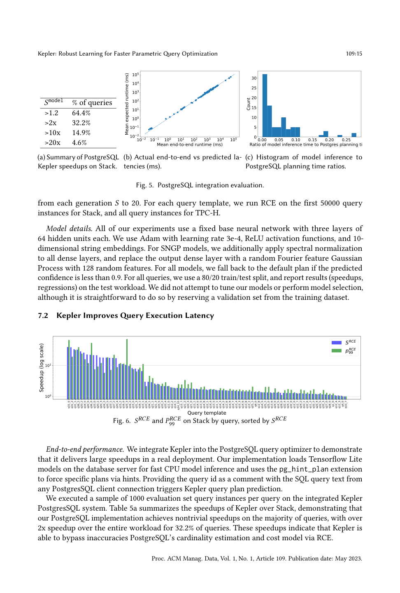
端到端性能。 我们将 Kepler 集成到 PostgreSQL 查询优化器中，以证明它在真实部署中带来大幅加速。我们的实现在数据库服务端加载 Tensorflow Lite 模型进行快速 CPU 推理，并使用 pg_hint_plan 扩展通过提示强制特定计划。从任意 PostgreSQL 客户端连接以 SQL 注释形式提供查询 id，即可触发 Kepler 的查询计划预测。我们在集成后的 Kepler PostgreSQL 系统上，每个查询执行 1000 个评估集查询实例的采样。表 5a 汇总了 Kepler 相对 Stack 的加速，表明我们的 PostgreSQL 实现在绝大多数查询上取得非平凡加速——32.2% 的查询整体工作负载加速超过 2×。这些加速表明 Kepler 能通过 RCE 绕过 PostgreSQL 基数估计与代价模型的不准确。
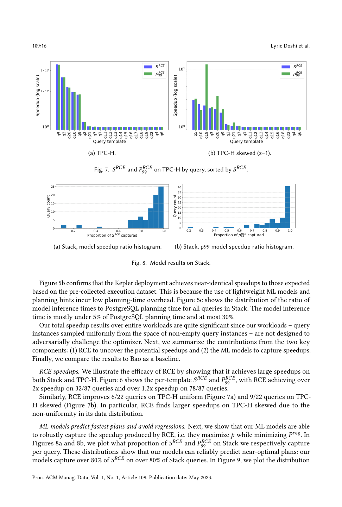
RCE 加速。 图 6 展示了逐模板的 $S_{RCE}$ 与 $P_{RCE}^{99}$：RCE 在 87 个查询中的 32 个上取得超过 2× 的加速，在 78 个上超过 1.2×。类似地，RCE 在 TPC-H 均匀（图 7a）上改进 22 个中的 6 个，在 TPC-H 偏斜（图 7b）上改进 22 个中的 9 个；由于在数据分布上的非均匀性，RCE 在偏斜 TPC-H 上找到更大的加速。
ML 模型预测最快计划并避免退化。 图 8a 与 8b 展示了我们在 Stack 上分别捕获了多少比例的 $S_{RCE}$ 与 $P_{RCE}^{99}$。这些分布表明我们的模型能可靠预测近最优计划：在超过 80% 的 Stack 查询上，模型捕获了超过 80% 的 $S_{RCE}$。
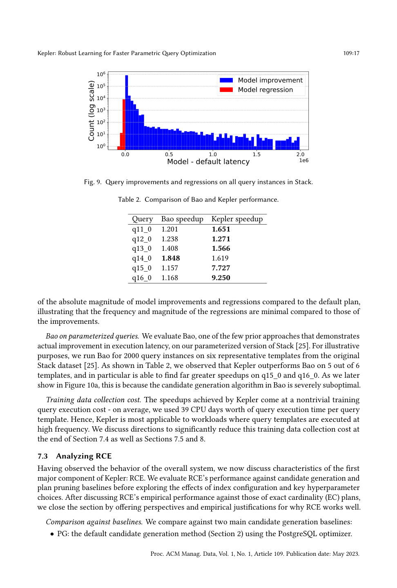
表 2. Bao 与 Kepler 性能比较。
| 查询 | Bao 加速 | Kepler 加速 |
|---|---|---|
| q11_0 | 1.201 | 1.651 |
| q12_0 | 1.238 | 1.271 |
| q13_0 | 1.408 | 1.566 |
| q14_0 | 1.848 | 1.619 |
| q15_0 | 1.157 | 7.727 |
| q16_0 | 1.168 | 9.250 |
参数化查询上的 Bao。 我们评估了 Bao（少数展示出真实执行延迟改进的先前方法之一）在我们参数化版 Stack [25] 上的表现。为说明，我们对原始 Stack 数据集 [25] 中 6 个代表性模板运行 Bao 2000 个查询实例。如表 2 所示，Kepler 在 6 个模板中的 5 个上优于 Bao，尤其在 q15_0 与 q16_0 上找到了远大的加速。如图 10a 所示，这是因为 Bao 的候选生成算法严重次优。
训练数据收集成本。 Kepler 取得的加速伴随着非平凡的训练查询执行成本——平均每个查询模板我们消耗了 39 个 CPU 天的查询执行时间。因此，Kepler 最适用于查询模板以高频率执行的场景。我们在第 7.4 节末、7.5 节与第 8 节讨论了显著降低该成本的方向。
在观察了整体系统的行为后，我们讨论 Kepler 第一个主要组件 RCE 的特性。我们将 RCE 的性能与候选生成及计划剪枝基线进行比较，再探讨索引配置与关键超参数选择的影响，最后讨论 RCE 与精确基数（EC）计划的对比并给出 RCE 为何有效的解释。
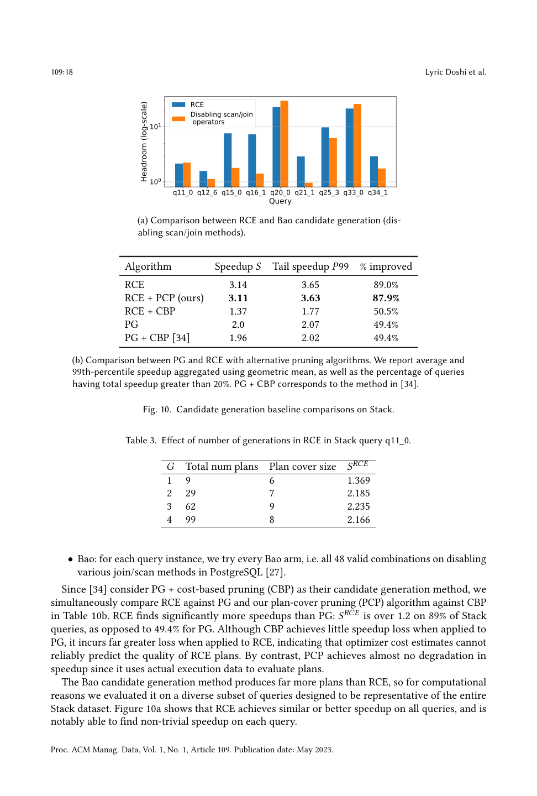
表 3. RCE 代数数量对 Stack 查询 q11_0 的影响。
| $G$ | 计划总数 | 计划覆盖大小 | $S_{RCE}$ |
|---|---|---|---|
| 1 | 9 | 6 | 1.369 |
| 2 | 29 | 7 | 2.185 |
| 3 | 62 | 9 | 2.235 |
| 4 | 99 | 8 | 2.166 |
与基线比较。 我们与两个主要候选生成基线比较：PG（使用 PostgreSQL 优化器的默认候选生成方法）与 Bao（对每个查询实例尝试每个 Bao arm，即禁用各种连接/扫描方法的全部 48 种有效组合 [27]）。由于 [34] 将 PG+基于代价的剪枝（CBP）作为其候选生成方法，我们在表 10b 中同时将 RCE 与 PG、将我们的计划覆盖剪枝（PCP）与 CBP 进行比较。RCE 发现的加速明显多于 PG：在 89% 的 Stack 查询上 $S_{RCE}>1.2$，而 PG 仅为 49.4%。虽然 CBP 应用于 PG 时几乎不损失加速，但应用于 RCE 时损失大得多，表明优化器代价估计无法可靠预测 RCE 计划的质量；相比之下，PCP 由于使用实际执行数据评估计划，几乎不造成加速退化。Bao 候选生成产生的计划远多于 RCE，出于计算原因我们在一个有代表性的查询子集上评估它；图 10a 显示 RCE 在所有查询上取得相似或更好的加速，且能在每个查询上都找到非平凡加速。
代数 $G$。 超参数 $G$ 对 RCE 生成计划的数量与质量有显著影响。表 3 显示：计划数与计划覆盖大小稳定增长到三代，但大部分加速在二代发现的计划中已被捕获；将 $G$ 增至四代不再带来边际收益。
指数行数扰动范围：$b$ 与 $m$。 为论证选择 $b=10$、$m=2$ 的合理性，我们分析了在计划单层诱导改变所需的扰动因子。在 Stack 上观察到：尽管某些计划需要 $10^6$ 的扰动因子才能诱导计划改变，但绝大多数因子小于 $10^2$。
表 4. 不同索引配置下逐查询 $S_{RCE}$ 的几何平均。
| PK | +FK | +Predicates | +DBA |
|---|---|---|---|
| 1.888 | 2.41 | 5.286 | 5.284 |
表 5. RCE 最优计划、精确基数计划与 PostgreSQL 所选计划的平局查询延迟（秒）比较。
| 查询 | RCE | 精确基数 | 查询优化器 |
|---|---|---|---|
| q11_0 | 0.045 | 0.167 | 0.180 |
| q12_2 | 0.350 | 0.768 | 0.954 |
| q14_10 | 2.503 | 2.107 | 5.732 |
| q16_1 | 1.136 | 2.174 | 8.575 |
| q20_0 | 0.012 | 0.046 | 0.232 |
| q33_0 | 0.519 | 2.920 | 3.377 |
对索引配置的鲁棒性。 RCE 在不同索引配置的数据库上都能找到更好的计划。我们运行了 Stack 的以下索引配置：仅主键（PK）、外键（FK）、谓词列、以及 DBA 定义的额外索引 [25]。表 4 显示 RCE 在所有配置下都找到了更快计划；与 [22] 类似，我们发现更多索引带来更大加速。 RCE 能发现最优计划吗？ 尽管 RCE 明显生成了比多种基线更快的计划，我们也想知道 RCE 计划与真实最优计划 $p^*_{\text{opt}}(q)$ 的接近程度。由于实践中确定 $p^*_{\text{opt}}(q)$ 不可行，我们改为对照精确基数计划这一标准基准 [22, 29]。表 5 显示：在 6 个查询中的 5 个上，RCE 计划显著快于精确基数计划。这表明即便准确的基数估计方法，也可能因代价模型中的错误假设等缺陷导致次优计划。
表 6. RCE-all、RCE-cluster 与 RCE-instance 的平均查询延迟（秒）比较。
| 查询 | RCE-all | RCE-cluster | RCE-instance |
|---|---|---|---|
| q11_1 | 0.024 | 0.027 | 0.051 |
| q12_6 | 0.307 | 0.307 | 0.316 |
| q20_0 | 0.006 | 0.006 | 0.010 |
| q21_1 | 0.129 | 0.129 | 0.153 |
| q25_3 | 2.212 | 2.212 | 2.212 |
| q33_0 | 0.593 | 0.670 | 0.810 |
| q34_1 | 2.482 | 2.663 | 2.914 |
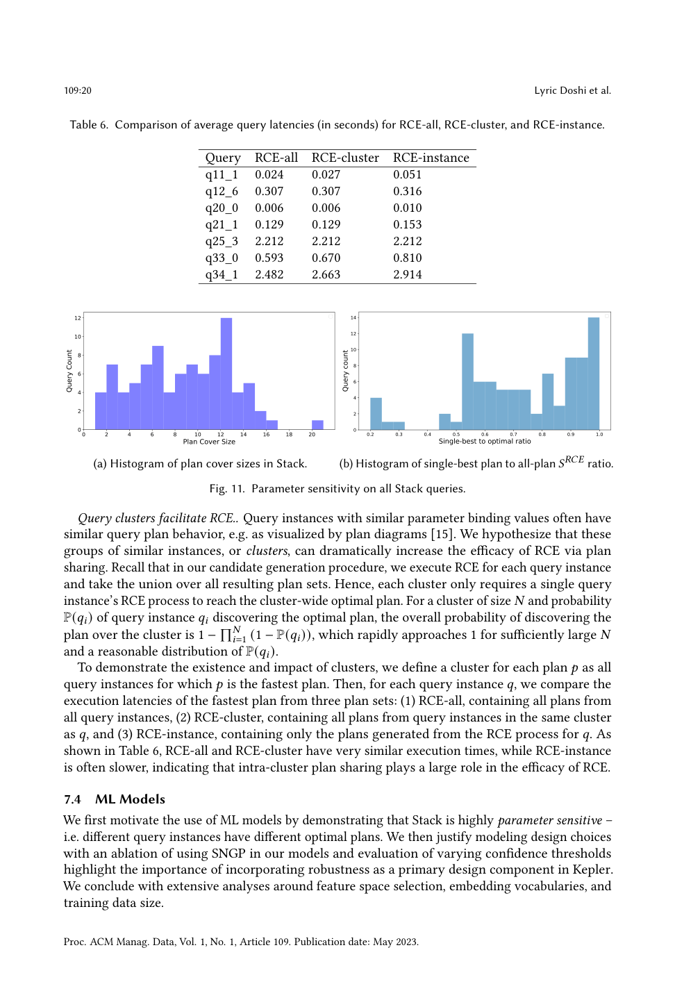
查询簇促进 RCE。 具有相似参数绑定值的查询实例通常有相似的查询计划行为。我们假设这些相似实例的组（簇）能通过计划共享大幅提升 RCE 的效率。在我们的候选生成过程中，我们对每个查询实例执行 RCE，并取所有结果计划集的并集；因此，每个簇只需一个查询实例的 RCE 过程即可到达该簇范围内的最优计划。表 6 显示：RCE-all 与 RCE-cluster 执行时间非常接近，而 RCE-instance 往往更慢，表明簇内计划共享在 RCE 的有效性中扮演了重要角色。
我们首先通过证明 Stack 具有高度参数敏感性（即不同查询实例有不同最优计划）来论证使用 ML 模型的动机；然后通过对使用 SNGP 的消融实验与不同置信度阈值的评估，论证将鲁棒性作为 Kepler 主要设计组件的重要性；最后围绕特征空间选择、嵌入词表与训练数据规模展开广泛分析。
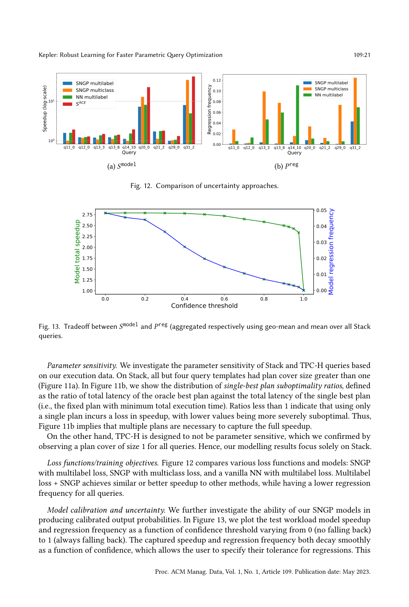
参数敏感性。 在 Stack 上，除 4 个模板外所有查询模板的计划覆盖大小都大于 1（图 11a）；图 11b 显示单最优计划次优性比率的分布——低于 1 表示仅使用单一计划会损失加速。这表明捕获全部加速需要多个计划。TPC-H 被设计为不具参数敏感性（所有查询的计划覆盖大小均为 1），因此我们的建模结果只聚焦 Stack。
损失函数/训练目标。 图 12 比较了多种损失函数与模型：SNGP+多标签损失、SNGP+多类损失、普通 NN+多标签损失。多标签损失+SNGP 取得相似或更好的加速，同时对全部查询有更低的退化频率。
模型校准与不确定性。 图 13 绘制了测试工作负载的模型加速与退化频率随置信度阈值（从 0 即不回退到 1 即总是回退）的变化。捕获的加速与退化频率都随置信度平滑衰减，使用户可指定其对退化的容忍度，也凸显了回退机制的重要性。
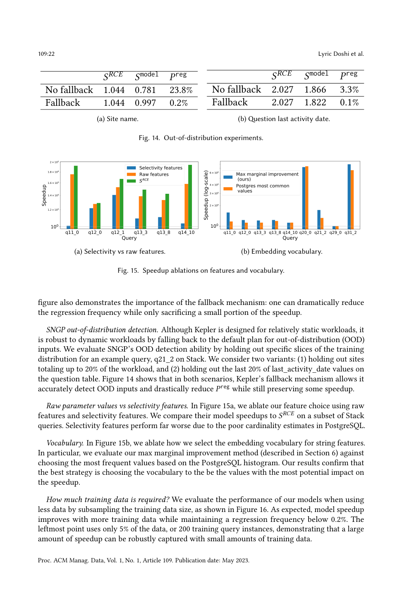
SNGP 分布外检测。 尽管 Kepler 为相对静态的工作负载设计，它通过为分布外（OOD）输入回退到默认计划而对动态工作负载具有鲁棒性。我们通过对训练分布中特定切片进行留出（hold-out）来评估 SNGP 的 OOD 检测能力。图 14 显示两种场景下 Kepler 的回退机制都能准确检测 OOD 输入，并在保留部分加速的同时大幅降低 $P_{\text{reg}}$。
原始参数值 vs. 选择度特征。 图 15a 显示，由于 PostgreSQL 中较差的基数估计，选择度特征表现远差。词表。 图 15b 显示，我们的最大边际改进方法优于基于 PostgreSQL 直方图的"最常见值"选择。
需要多少训练数据？ 图 16 显示，模型加速随更多训练数据而提升，同时将退化频率维持在 0.2% 以下；最左点仅用 5% 数据（200 个训练查询实例）就捕获了大部分加速。
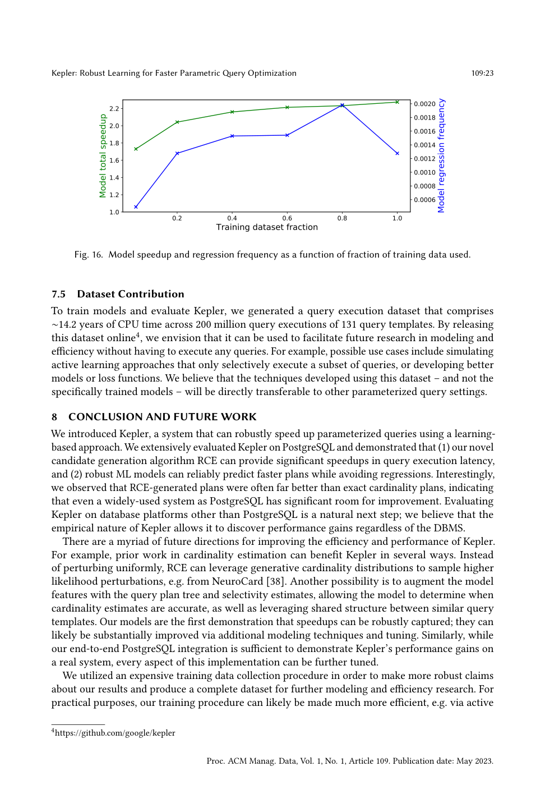
为训练模型并评估 Kepler，我们生成了一个查询执行数据集，涵盖 131 个查询模板、约 2 亿次查询执行、约 14.2 年的 CPU 时间。通过在线发布该数据集 4，我们希望它能促进未来在建模与效率方面的研究而无需执行任何查询。我们相信：使用该数据集开发出的技术（而非具体训练出的模型）将可直接迁移到其他参数化查询场景。
我们介绍了 Kepler，一个能用基于学习的方法鲁棒地加速参数化查询的系统。我们在 PostgreSQL 上广泛评估了 Kepler，并证明：(1) 我们新颖的候选生成算法 RCE 能在查询执行延迟上提供显著加速；(2) 鲁棒的 ML 模型能在避免退化的同时可靠预测更快的计划。有趣的是，我们观察到 RCE 生成的计划常常远优于精确基数计划，表明即便是 PostgreSQL 这样广泛使用的系统也有巨大的改进空间。在 PostgreSQL 之外的数据库平台上评估 Kepler 是自然的下一步。
改进 Kepler 的效率与性能有众多未来方向。例如，基数估计的先前工作可在多方面裨益 Kepler：RCE 可利用生成式基数分布（如 NeuroCard [38]）来采样更高可能性的扰动，而非均匀扰动；另一可能是用查询计划树与选择度估计增强模型特征，使模型能判断基数估计何时准确，并利用相似查询模板间的共享结构。我们的模型首次证明了加速可被鲁棒地捕获，它们很可能通过额外的建模技术与调参得到实质性改进。类似地，尽管我们的端到端 PostgreSQL 集成足以展示 Kepler 在真实系统上的性能增益，该实现的每个方面都可进一步调优。
我们使用了昂贵的训练数据收集过程，以便对我们的结果做出更鲁棒的论断，并生成一个完整数据集供未来建模与效率研究之用。出于实用目的，我们的训练过程很可能可以变得高效得多，例如通过主动学习（结合图 16，这意味着可用显著更低的训练成本取得相近性能）。